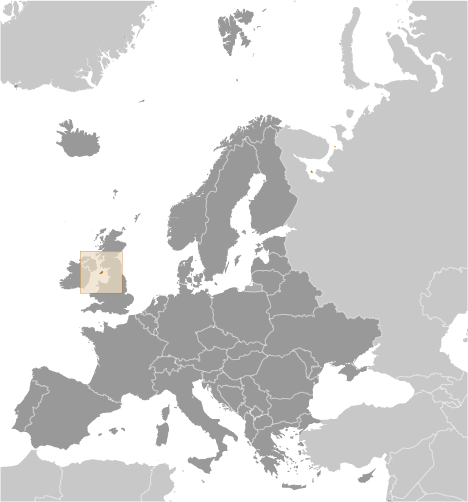
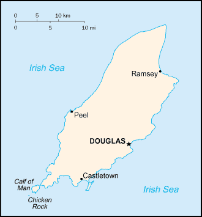
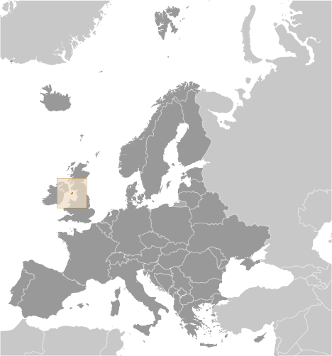
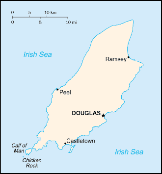

Europe :: ISLE OF MAN
Introduction :: ISLE OF MAN
-
Part of the Norwegian Kingdom of the Hebrides until the 13th century when it was ceded to Scotland, the isle came under the British Crown in 1765. Current concerns include reviving the almost extinct Manx Gaelic language. Isle of Man is a British Crown dependency but is not part of the UK or of the EU. However, the UK Government remains constitutionally responsible for its defense and international representation.
Geography :: ISLE OF MAN
-
Western Europe, island in the Irish Sea, between Great Britain and Ireland54 15 N, 4 30 WEuropetotal: 572 sq kmland: 572 sq kmwater: 0 sq kmcountry comparison to the world: 194slightly more than three times the size of Washington, DC0 km160 kmterritorial sea: 12 nmexclusive fishing zone: 12 nmtemperate; cool summers and mild winters; overcast about a third of the timehills in north and south bisected by central valleymean elevation: NAelevation extremes: lowest point: Irish Sea 0 mhighest point: Snaefell 621 mnoneagricultural land: 74.7%arable land 43.8%; permanent crops 0%; permanent pasture 30.9%forest: 6.1%other: 19.2% (2011 est.)0 sq km (2012)most people concentrated in cities and large towns of which Douglas, in the southeast, is the largestoccasional high winds and rough seaswaste disposal (both household and industrial); transboundary air pollutionone small islet, the Calf of Man, lies to the southwest and is a bird sanctuary
People and Society :: ISLE OF MAN
-
88,815 (July 2017 est.)country comparison to the world: 199noun: Manxman(men), Manxwoman(women)adjective: Manxwhite 96.5%, Asian/Asian British 1.9%, other 1.5% (2011 est.)English, Manx Gaelic (about 2% of the population has some knowledge)Protestant (Anglican, Methodist, Baptist, Presbyterian, Society of Friends), Roman Catholic0-14 years: 16.28% (male 7,547/female 6,916)15-24 years: 11.43% (male 5,355/female 4,800)25-54 years: 38.79% (male 17,215/female 17,234)55-64 years: 13.13% (male 5,891/female 5,772)65 years and over: 20.36% (male 8,469/female 9,616) (2017 est.)total: 44.2 yearsmale: 43.3 yearsfemale: 44.9 years (2017 est.)country comparison to the world: 110.68% (2017 est.)country comparison to the world: 14111 births/1,000 population (2017 est.)country comparison to the world: 18010.2 deaths/1,000 population (2017 est.)country comparison to the world: 376 migrant(s)/1,000 population (2017 est.)country comparison to the world: 17most people concentrated in cities and large towns of which Douglas, in the southeast, is the largesturban population: 52.4% of total population (2017)rate of urbanization: 0.81% annual rate of change (2015-20 est.)DOUGLAS (capital) 29,000 (2014)at birth: 1.08 male(s)/female0-14 years: 1.1 male(s)/female15-24 years: 1.1 male(s)/female25-54 years: 1 male(s)/female55-64 years: 1.02 male(s)/female65 years and over: 0.87 male(s)/femaletotal population: 1 male(s)/female (2016 est.)total: 4 deaths/1,000 live birthsmale: 4 deaths/1,000 live birthsfemale: 4.1 deaths/1,000 live births (2017 est.)country comparison to the world: 193total population: 81.3 yearsmale: 79.6 yearsfemale: 83.2 years (2017 est.)country comparison to the world: 291.92 children born/woman (2017 est.)country comparison to the world: 132NANANAtotal: 10.1%male: 11.8%female: 8.2% (2011 est.)country comparison to the world: 118
Government :: ISLE OF MAN
-
conventional long form: noneconventional short form: Isle of Manabbreviation: I.O.M.etymology: the name "man" may be derived from the Celtic word for "mountain"British Crown dependencyparliamentary democracy (Tynwald); a Crown dependency of the UKname: Douglasgeographic coordinates: 54 09 N, 4 29 Wtime difference: UTC 0 (5 hours ahead of Washington, DC, during Standard Time)daylight saving time: +1hr, begins last Sunday in March; ends last Sunday in Octobernone; there are no first-order administrative divisions as defined by the US Government, but there are 24 local authorities each with its own electionsnone (British crown dependency)Tynwald Day, 5 July (1417); date Tynwald Day was first recordedhistory: development of the Isle of Man constitution dates to at least the 14th centuryamendments: proposed as a bill in the House of Keys, by the “Government,” by a “Member of the House,” or through petition to the House or Legislative Council; passage normally requires three separate readings and approval of at least 13 House members; following both House and Council agreement, assent is required by the lieutenant governor on behalf of the Crown; the constitution has been expanded and amended many times, last in 2015 (2016)the laws of the UK, where applicable, apply and include Manx statutessee United Kingdom16 years of age; universalchief of state: Lord of Mann Queen ELIZABETH II (since 6 February 1952); represented by Lieutenant Governor Sir Richard GOZNEY (since 27 May 2016)head of government: Chief Minister Howard QUAYLE (since 4 October 2016)cabinet: Council of Ministers appointed by the lieutenant governorelections/appointments: the monarchy is hereditary; lieutenant governor appointed by the monarch; chief minister indirectly elected by the Tynwald for a 5-year term (eligible for second term); election last held on 4 October 2016 (next to be held in 2021)election results: Howard QUAYLE (independent) elected chief minister; Tynwald vote - 21 of 33description: bicameral Tynwald or the High Court of Tynwald consists of the Legislative Council (11 seats; includes the President of Tynwald, 2 ex-officio members - the Lord Bishop of Sodor and Man and the attorney general (non-voting) - and 8 members indirectly elected by the House of Keys with renewal of 4 members every 2 years; elected members serve 4-year terms) and the House of Keys (24 seats; 2 members directly elected by simple majority vote from 12 constituencies to serve 5-year terms)elections: House of Keys - last held on 22 September 2016 (next to be held in September 2021)election results: House of Keys - percent of vote by party - Liberal Vannin 6.4%, independent 92.3%; seats by party - Liberal Vannin 3, other 1.3% independent 21highest resident court(s): Isle of Man High Court of Justice (consists of 3 permanent judges or "deemsters" and 1 judge of appeal; organized into the Staff of Government Division or Court of Appeal and the Civil Division); the Court of General Gaol Delivery is not formally part of the High Court but is administered as though part of the High Court and deals with serious criminal cases; note - appeals beyond the Court of Appeal are referred to the Judicial Committee of the Privy Council (in London)judge selection and term of office: deemsters appointed by the Lord Chancellor of England on the nomination of the lieutenant governor; deemsters can serve until age 70subordinate courts: High Court; Court of Summary Gaol Delivery; Summary Courts; Magistrate's Court; specialized courtsLiberal Vannin Party [Kate BEECROFT]Manx Labor PartyMec Vannin [Bernard MOFFATT]; (sometimes referred to as the Manx Nationalist Party)note: most members sit as independentsAlliance for Progressive Government or APG (a government watchdog)UPUnone (British Crown dependency)none (British Crown dependency)red with the Three Legs of Man emblem (triskelion), in the center; the three legs are joined at the thigh and bent at the knee; in order to have the toes pointing clockwise on both sides of the flag, a two-sided emblem is used; the flag is based on the coat-of-arms of the last recognized Norse King of Mann, Magnus III (r. 1252-65); the triskelion has its roots in an early Celtic sun symboltriskelion (a motif of three legs); national colors: red, whitename: "Arrane Ashoonagh dy Vannin" (O Land of Our Birth)lyrics/music: William Henry GILL [English], John J. KNEEN [Manx]/traditionalnote: adopted 2003, in use since 1907; serves as a local anthem; as a British Crown dependency, "God Save the Queen" is official (see United Kingdom) and is played when the sovereign, members of the royal family, or the lieutenant governor are present
Economy :: ISLE OF MAN
-
Financial services, manufacturing, and tourism are key sectors of the economy. The government offers low taxes and other incentives to high-technology companies and financial institutions to locate on the island; this has paid off in expanding employment opportunities in high-income industries. As a result, agriculture and fishing, once the mainstays of the economy, have declined in their contributions to GDP. The Isle of Man also attracts online gambling sites and the film industry. Online gambling sites provided about 10% of the islands income in 2014. The Isle of Man enjoys free access to EU markets and trade is mostly with the UK. In October 2014, the Isle of Man signed an OECD agreement to automatically exchange some financial account information to limit tax avoidance and evasion.$7.428 billion (2014 est.)$6.298 billion (2013 est.)$5.85 billion (2012 est.)note: data are in 2014 US dollarscountry comparison to the world: 165$7.013 billion (2007 est.)2.2% (2012)3.4% (2011)2.1% (2010)country comparison to the world: 127$84,600 (2014 est.)$73,100 (2013 est.)$68,500 (2012 est.)country comparison to the world: 9agriculture: 1%industry: 13%services: 86% (FY12/13 est.)cereals, vegetables; cattle, sheep, pigs, poultryfinancial services, light manufacturing, tourism41,790 (2006)country comparison to the world: 195agriculture, forestry, and fishing: 2%manufacturing: 5%construction: 8%gas, electricity, and water: 1%transport and communication: 9%wholesale and retail distribution: 11%professional and scientific services: 20%public administration: 7%banking and finance: 23%tourism: 1%entertainment and catering: 5%miscellaneous services: 8% (2006)2.7% (2013 est.)2% (April 2011 est.)country comparison to the world: 26NA%lowest 10%: NA%highest 10%: NA%revenues: $965 millionexpenditures: $943 million (FY05/06 est.)13.8% of GDP (FY05/06 est.)country comparison to the world: 2000.3% of GDP (FY05/06 est.)country comparison to the world: 371 April - 31 March5% (2010 est.)3.1% (2006)country comparison to the world: 174$NA$NAtweeds, herring, processed shellfish, beef, lamb$NAtimber, fertilizers, fish$NAManx pounds (IMP) per US dollar -0.738 (2016)0.738 (2015)0.6542 (2014)0.6472 (2013 est.)0.6241 (2012 est.)
Energy :: ISLE OF MAN
-
electrification - total population: 100% (2016)
Communications :: ISLE OF MAN
-
domestic: landline, telefax, mobile cellular telephone systeminternational: country code - 44; fiber-optic cable, microwave radio relay, satellite earth station, submarine cablenational public radio broadcasts over 3 FM stations and 1 AM station; 2 commercial broadcasters operating with 1 having multiple FM stations; receives radio and TV services via relays from British TV and radio broadcasters (2008).im
Transportation :: ISLE OF MAN
-
M (2016)1 (2013)country comparison to the world: 221total: 11,524 to 2,437 m: 1 (2017)total: 63 kmnarrow gauge: 6 km 1.076-m gauge (6 km electrified); 57 km 0.914-m gauge (29 km electrified)note: primarily summer tourist attractions (2008)country comparison to the world: 130total: 500 km (2008)country comparison to the world: 197total: 321by type: bulk carrier 59, cargo 55, chemical tanker 52, container 7, liquefied gas 43, passenger/cargo 2, petroleum tanker 93, roll on/roll off 5, vehicle carrier 5foreign-owned: 223 (Bermuda 7, Chile 9, Denmark 30, Germany 56, Greece 62, Ireland 1, Japan 19, Malaysia 6, Norway 30, South Africa 2, US 1) (2010)country comparison to the world: 30major seaport(s): Douglas, Ramsey
Military and Security :: ISLE OF MAN
-
defense is the responsibility of the UK
Transnational Issues :: ISLE OF MAN
-
none